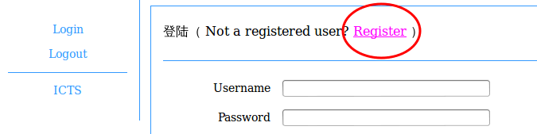
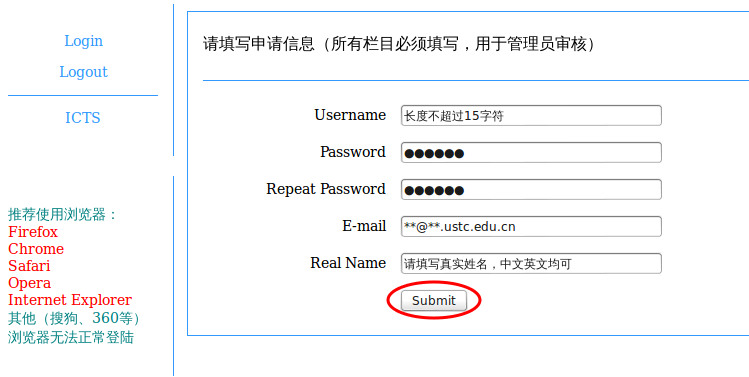
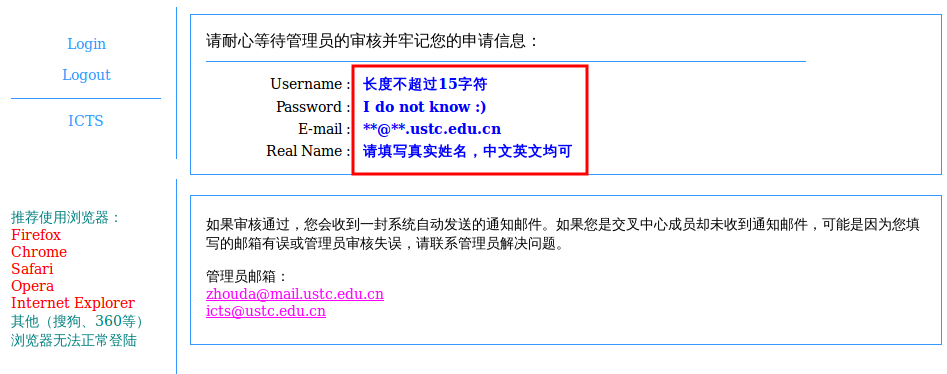
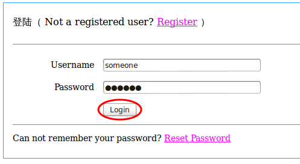
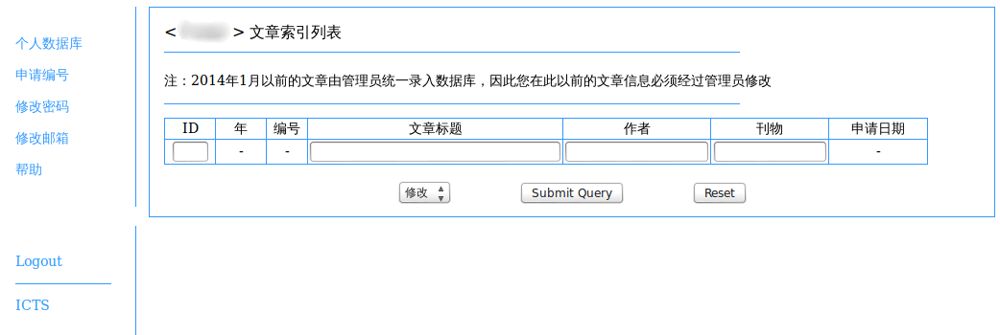
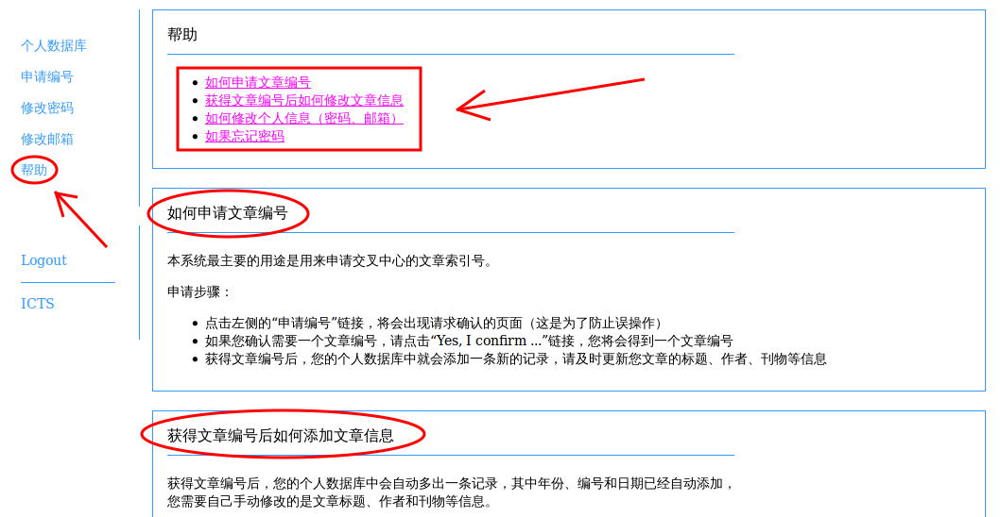

ICTS预印本编号申请系统的地址为：210.45.114.81/inds/，地址中最后一个斜线“/”必须要加。由于没有申请域名，所以只能通过IP访问，当然也可以从中心主页链接至此
该系统使用的服务器使用网络通连接网络，对于校内和国际均通过教育网连接，所以只要没有网络故障总是能够连接的，但对于国内的校外用户，由于可能走电信或联通网络，实际的IP地址可能会发生转换，所以不保证通过IP：210.45.114.81能够访问
上述问题的解决办法之一是，通过科大给教师用户提供的VPN代理先连接到校内，再使用210.45.114.81就能连接了
如果使用过程中有什么问题或建议，欢迎通过邮件反馈给我（周达）：zhouda (at) mail.ustc.edu.cn
点击下图中红色圆圈标记出的链接，进入注册页面
请如实填写您的个人信息，每个栏目都必须填写：密码长度不少于6位；邮箱最好使用科大邮箱，一定要是正确的且不和其他申请者重复的邮箱地址；填写真实姓名是为了方便管理员审核和将来万一忘记密码可用于重设密码。填完后点击"submit"提交
提交信息后等待数秒（因为后台要执行发送邮件等操作），直至出现以下画面（其中会重复您填写的个人申请信息，请检查是否有误，若有误请邮件通知管理员更正或重新填写一份申请）
请耐心等待管理员审核（可能需要数天时间），如果审核通过，您会收到一封系统自动发送的告知审核通过的邮件，请勿回复该邮件。如果长时间未收到邮件，则可能是由于您填写了错误的邮箱地址，请联系管理员更正
同样请使用前面推荐的浏览器访问登录页面，并输入用户名和密码，然后点击login按钮
成功登录后，您将会看到类似于下面的页面
之后的操作如若有疑问请点击“帮助”链接，所有需要的操作方法都写在帮助里，此处不再重述
作者：周 达
电子邮箱：zhouda (at) mail.ustc.edu.cn